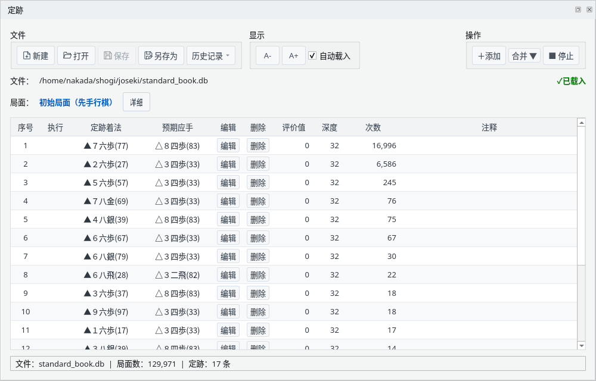
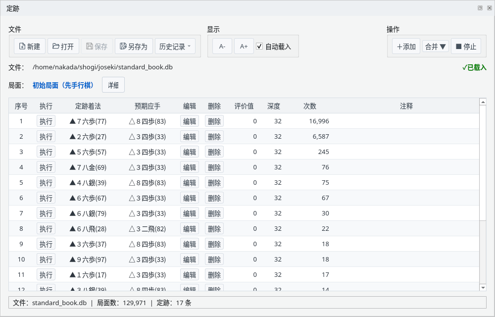
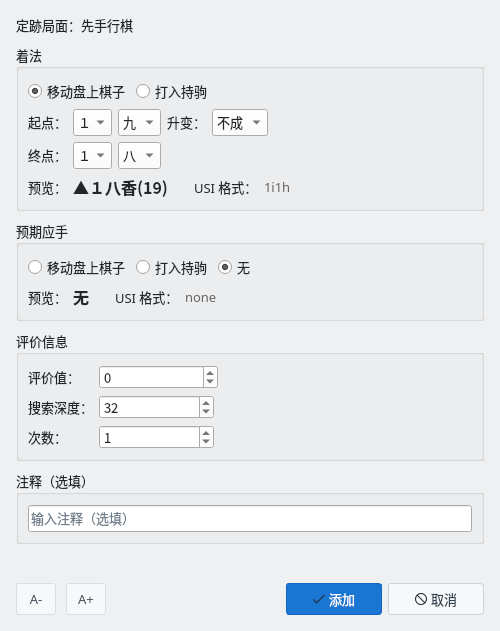
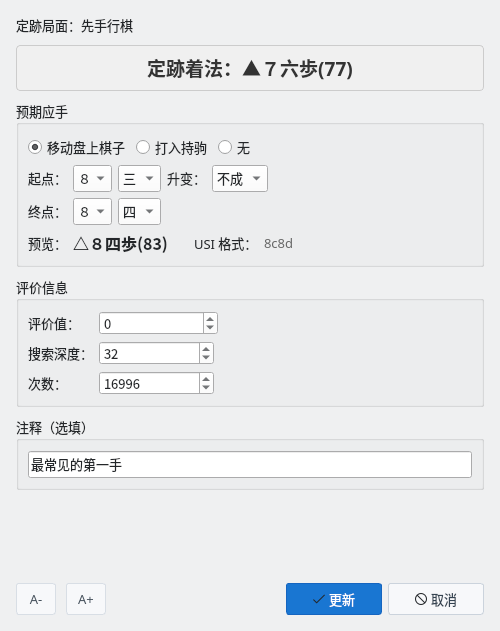
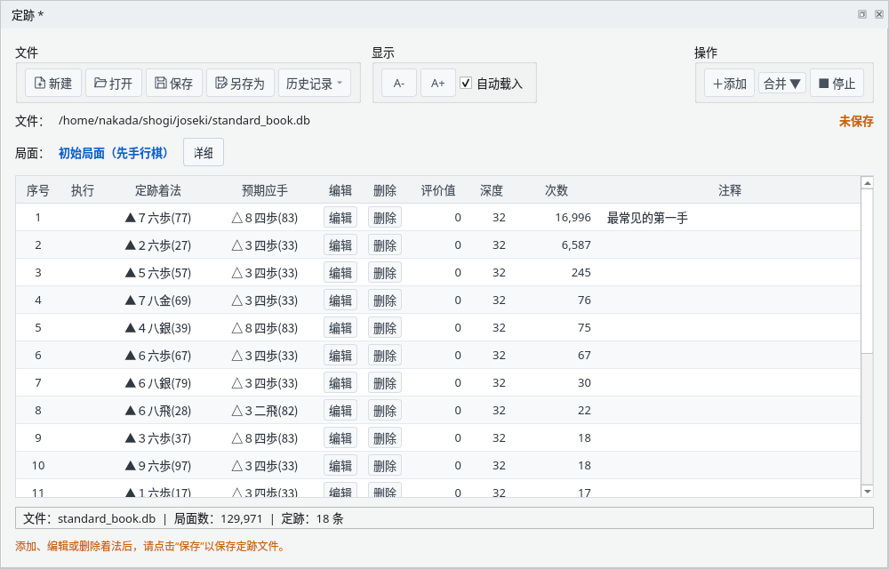
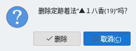
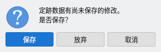
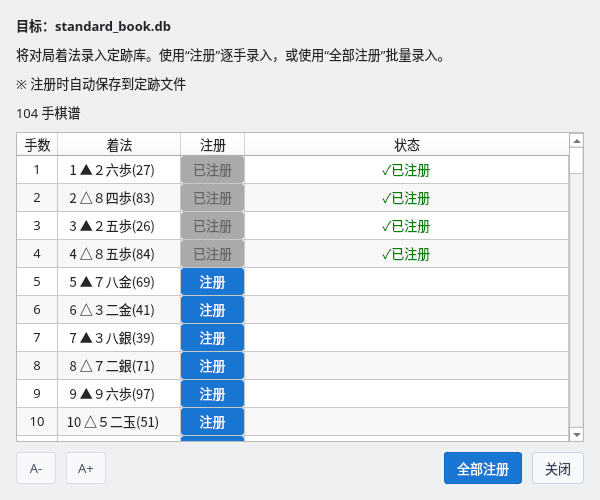

查看和编辑 YaneuraOu 格式的定跡文件
截图在 Linux 上以简体中文界面拍摄。
在定跡窗口打开定跡文件，查看当前局面的定跡着法
选择“视图”→“定跡”显示定跡窗口。一开始它位于主窗口下方的标签页中。表格较窄时，可以扩大面板或让它成为独立窗口（参见面板布局指南）。
点击“打开”，选择 YaneuraOu 格式（#YANEURAOU-DB2016）的定跡文件（.db），例如 YaneuraOu 附带的 standard_book.db。点击“新建”可以创建空的定跡，“历史记录”可以打开最近使用的文件。勾选“自动载入”后，下次显示定跡窗口时会自动读取上次的文件。

定跡窗口：打开 standard_book.db 时的初始局面
当前局面登记的定跡着法按文件中的顺序排列。
在棋谱栏选择着法或对局推进时，会切换为该局面的定跡着法。不区分手数，相同局面总是显示相同的定跡着法。
点击“详细”可显示局面和定跡的 SFEN。“■ 停止”暂停定跡显示，“▶ 恢复”重新显示。最下方一行显示文件名、局面数和当前局面的定跡着法数。未打开定跡文件或该局面没有定跡时，表格中会显示提示。
对局中轮到自己时，可以直接执行定跡着法
对局中轮到自己时，“执行”列会显示按钮。点击按钮或双击该行即可执行该定跡着法（升变与否也按照定跡）。执行的着法与在棋盘上走的着法一样记录在棋谱中。
轮到引擎时、引擎之间的对局中以及未对局时，“执行”列为空，无法执行定跡着法。

对局中：轮到自己时可用“执行”按钮走定跡着法
添加、编辑、删除定跡着法，并保存到定跡文件
点击“＋添加”为当前局面添加定跡着法。选择“移动盘上棋子”或“打入持驹”，指定起点和终点，并通过预览确认。预期应手也可以选择“无”。
输入的着法在该局面不能走时，无法点击“添加”。已登记相同着法时，会确认是否覆盖。

添加定跡着法：通过预览确认着法后添加
点击“编辑”可以修改预期应手、评价值、搜索深度、次数和注释（着法本身不能修改）。右键单击表格的行，还可以使用执行、编辑、删除和复制着法的菜单。
修改后，文件名右侧会显示“未保存”和提示保存的说明。

编辑定跡着法：修改评价值、搜索深度、次数和注释

编辑后：显示注释、“未保存”和保存提示
点击“删除”会显示确认，确认后删除该定跡着法。
使用“保存”（覆盖）或“另存为”把修改写入定跡文件。有未保存的修改时，通过“新建”“打开”“历史记录”切换文件，或关闭定跡窗口、应用程序时，会确认是否保存。

删除确认

有未保存修改时的确认
把棋谱中的着法一并登记到定跡
选择“合并 ▼”→“从当前棋谱”或“从棋谱文件”（KIF 格式），会列出棋谱主线的着法（先手和后手）。“注册”逐手登记，“全部注册”一次全部登记。
新的着法以无预期应手、评价值 0、深度 0、次数 1 登记；已有的着法次数加 1。登记后会立即保存到定跡文件（其他未保存的修改也会一并保存）。尚未保存的新定跡需要先指定保存位置。“✓已注册”表示打开该文件后登记的着法。

合并：逐手或一次全部登记棋谱的着法